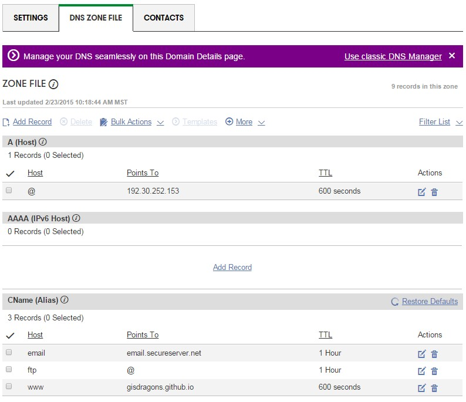

Technical Specifications
How was the software built?
This website was built using godaddy.com to find a domain name
and Github pages to host this website.
Domain Name
Our domain name of "mormonhistorygis.com" was purchased from
godaddy.com for 1 dollar a month for 12
months. With this deal we also received access to their website
builder. Their website builder, however, it did not provided
access to the basic HTML, JavaScript, and CSS control that we
wanted to have.
Hosting
We decided to use
Github Pages to host our
HTML, JavaScript, CSS, and other files so that we could have full
control over the content and display of our website. This hosting
is provided for free as long as the code is open source. Our
repository setup on Github is named
GISdragons.githb.io.
Our set-up for the website was done in the following way:
Set-up

Using the site manager provided by godaddy.com, we went to the
"DNS Zone File" to change some settings to point to the Github
Pages server and our Github Repository. Here on this website we
had to change two sections. First, the "A (Host)" section needed
to point to the Github Pages IP address. This was done by deleting
the default address and adding the "@" name to "192.30.252.153".
Also, The "CName (Alias)" section was also changed. The default "www"
pointer was changed to point to our repository named
"GISdragons.github.io". (NOTE: Github recommends that you do NOT
change both if you want to keep the emailing system for your
website. Refer to their help pages on A and CName files to find
out specifically what you need to do for your situation. For our
website, it was necessary to change both to get the hosting to
work)
For the Github pages, since there are two main creators of the
website, we made a Github Organization so that both could edit and
manage the website files. We chose the name "GISdragons". Next,
we needed to create a repository. Following the Github pages
recommendation, we created the repository name
"GISdragons.github.io". This repository name was used because it
was our group name, followed by the ".github.io" to help show that
it was a Github Pages hosting repository. Inside this repository,
it was required for us to set-up a "A" and "CNAME" files that only
contained our website domain "mormonhistorygis.com". Also inside
our repository, we needed to have an "index.html" file that is the
main page for website.
By using the following method, we were able to host our website at
a different location than where we purchased the domain name,
without the domain name changing to the location of our hosting.
Also, it the hosting was free, which in the long run could lower
future cost as it does cost more to keep the domain name and hosting
for the website.
Who built it?
This website was created by Stephen Duncan and Preston Merrell.
What is it's license?
What are the hardware and software limitations/requirements?
The limitations of our website and software are that they are based
on our limited knowledge of HTML, JavaScript, CSS, and KML as well
as our limited knowledge of the life of Joseph Smith. We have based
our website on just a few significant places from the life of the
prophet Joseph Smith Jr. If you would like a more significant view
on his life, you can visit
LDS.org or any other
website sponsored by The Church of Jesus Christ of Latter-Day
Saints.
Software Design
What is the purpose of the software?
The purpose of this website is to share some of the significant places and events in the life
of the prophet Joseph Smith Jr. He was the first prophet of The Church of Jesus Christ of Latter-Day
Saints. We wanted to share some of those sites and places that are historically significant to his
family or the church in general. This is our simple way of sharing that information.
What is the software structure?
Our software uses four different types of codes. They are:
- HTML (HyperText Markup Language)
- JavaScript
- CSS (Cascading Style Sheet)
- KML (Keyhole Markup Language)
As shown in the Figure above:
The HTML and CSS are the base to this project, making up most of the code and formatting behind the website.
Most of this code is being held inside our index.html and style.css sheets at our Github pages repository.
Also included in our files are the Open Layers 3 CSS and JavaScript libraries so that we could display our
KML and image files for the user. We also created our own map.js JavaScript file to create the personal map
and allow for some interaction with the user. Other files, like images, are also stored on the Github
repository for the HTML and KML to have direct links to them. Finally, the A and CNAME files are also stored
on the repository to help direct the domain name to this repository.
What are the main files?
The files used for hosting the website are:
We downloaded a couple files from Open Layers 3 that would allow the map to work on our website.
These files were stored directly onto the repository so that they would not go out of date. Here are the
links to the original files that we used from Open Layers 3:
We needed to create several unique files for the user to interact with our website and also personally
format the website code. Here is a list of the main files created for the website.
- index.html
- styles.css
- map.js
- Joseph Smith Life.kml
- UserDocumentation.html
- DesignDocument.html
What are the key classes and functions?
HTML Code
For our HTML code, we found that most of the unique tags and formatting where to be done using div tags. We
had several different classes that we created and accessed from the CSS code. Some examples of how we used
the div tags are for the map, custom paragraphs, and custom headers. The following is an example of how this text
is using a div tag.
<div class="p1">
(input text here)
</div>
CSS Code
In our CSS code, we needed to create and format several different new classes to accomadate the formatting
we wanted to display on our website. This would allow us to change the formatting in one place, but have the
style be uniform accross our website. The following is some sample code of our website of the custom headers
we used accross the website:
/* new headers since the normal ones are being buggy */
.new_h1 {
font-weight: normal;
text-align: center;
color: #ffffff;
font-size: 34px;
margin: 0 0 20px;
padding: 5px 0
}
.new_h2 {
font-weight: normal;
text-align: center;
color: #ffffff;
font-size: 20px;
margin: 0 0 15px;
padding: 5px 0
}
.new_h3 {
font-weight: normal;
text-align: center;
color: #ffffff;
font-size: 18px;
margin: 0 0 10px;
padding: 5px 0
}
.new_h4 {
font-weight: normal;
text-align: center;
font-size: 14px;
margin: 0 0 5px;
padding: 0;
color: black;
font-weight: bold;
}
/* end of new headers css */
JavaScript Code
In our JavaScript, we needed to create some functions that could interact with our website. These functions are
what allow the combo box list and buttons to zoom to and display the pop-up for each placemark in the KML
file. We needed two different functions for some of the different types of placemarks we had. One for the
points and another for the polylines and polygons.
For the points, we used the following function for both the list and buttons:
function clicked(ID) {
myFeature = JSLife.getSource().getFeatures()[ID];
myCoords = myFeature.getGeometry().getCoordinates();
myView = map.getView();
myView.setCenter(myCoords);
myView.setZoom(15);
JSLife.getSource().getFeatures()[ID]
overlay.setPosition(myCoords);
var displaycontent = myFeature.get('description');
content.innerHTML = displaycontent;
}
For the polyline and polygon, we used the following functions for both the list and buttons:
function showData() {
//place the bubble in the middle of the line somewhere
myFeature = JSLife.getSource().getFeatures()[13];
myCoords = myFeature.getGeometry().getCoordinates();
myView = map.getView();
//find a vertex half way down the line, roughly
midCoordIndex = parseInt(myCoords.length/2);
midCoord = myCoords[midCoordIndex];
myView.setCenter(midCoord);
myView.setZoom(7);
JSLife.getSource().getFeatures()[13]
overlay.setPosition(midCoord);
var displaycontent = myFeature.get('description');
content.innerHTML = displaycontent;
}
function showData2() {
//place the bubble in the middle of the line somewhere
myFeature = JSLife.getSource().getFeatures()[5];
myCoords = myFeature.getGeometry().getCoordinates();
myView = map.getView();
//find a vertex half way down the line, roughly
midCoordIndex = parseInt(myCoords.length/2);
midCoord = myCoords[midCoordIndex];
myView.setCenter(midCoord);
myView.setZoom(14);
JSLife.getSource().getFeatures()[5]
overlay.setPosition(midCoord);
var displaycontent = myFeature.get('description');
content.innerHTML = displaycontent;
}
KML Code
The unique part of our KML coding was using the description tag for each of the different placemarks inside
our pop-ups. KML has it's own unique way of coding this, but using a "CDATA" tag inside the KML allowed us to
us our HTML and CSS to format our text inside the pop-ups. The following is an example of how this can be done.
<description>
<![CDATA[
<div class="new_h4">Aaronic Priesthood Restoration</div>
<p><img src="aaronic.jpg" width="250" hight="160"> </p>
<p>
After Joseph Smith Jr. and Oliver Cowdery were
translating the Book of Mormon, they felt impressed
to go pray in May of 1829 about batism and the
remission of sins that had been mentioned in the Golden
Plates. While praying, John the Baptist visited them as
a resurrected being and conferred the Aaronic Priesthood,
or preparatory priesthood, upon both of them.
</p>
<p>
To read the full account you can follow this link.
<a href="https://www.lds.org/scriptures/pgp/js-h/1?lang=eng" target="_blank">
Joseph Smith - History 1:66-73
</a>
</p>
]]>
</description>
Contact Us
If you have any questions or would like to contribute to the repository, you may contact us at:
This content was created for the BYU CE EN 594R GIS Programming class taught by
Dr. Daniel P. Ames for the 2015 Winter Semester.